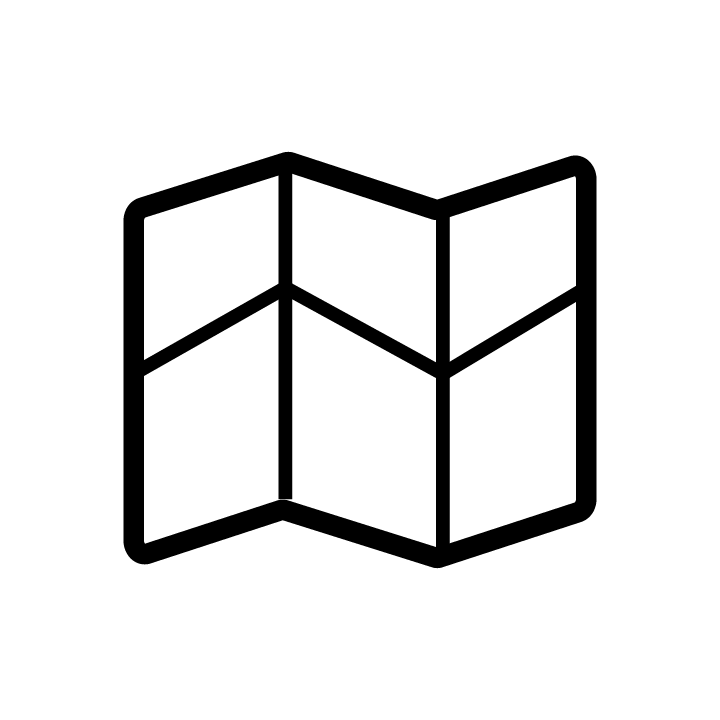
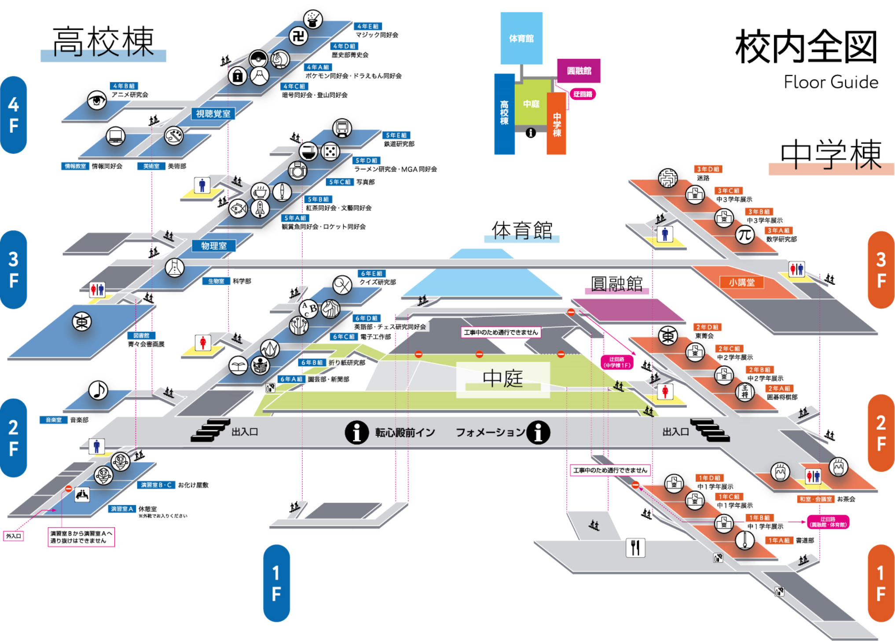
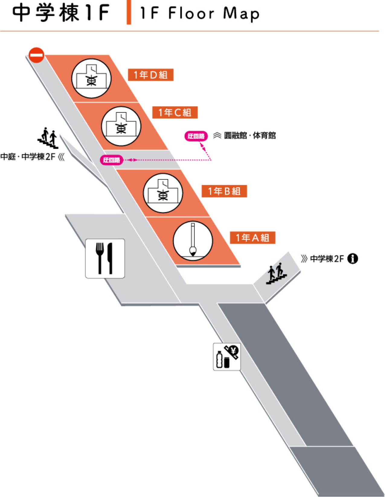
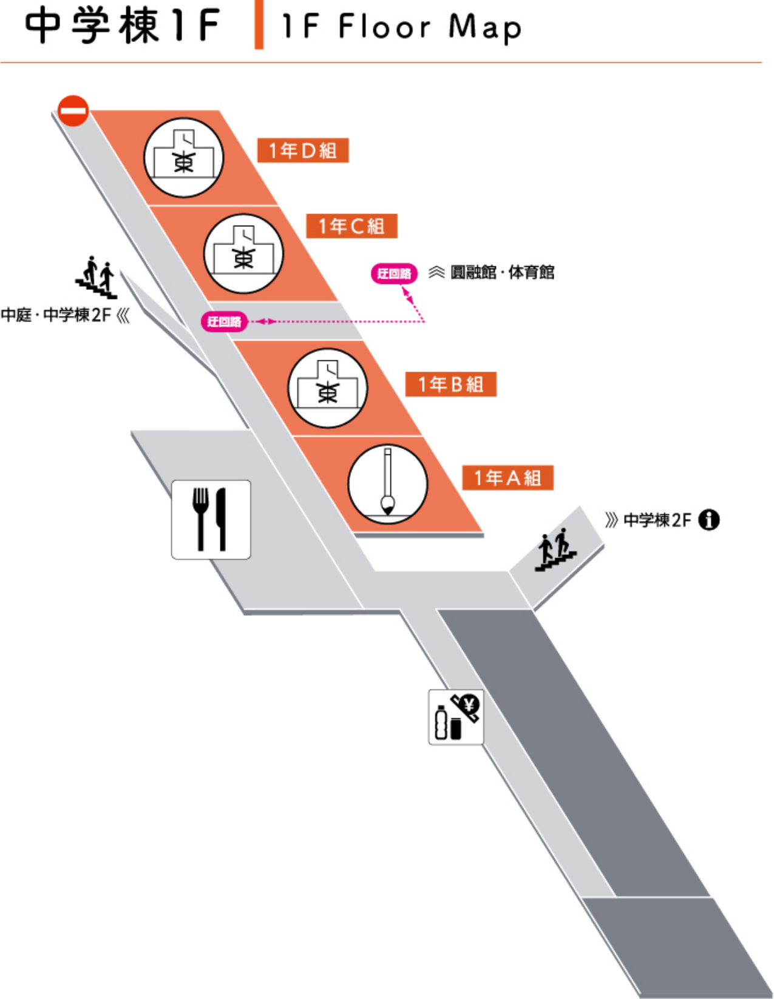
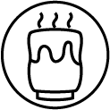
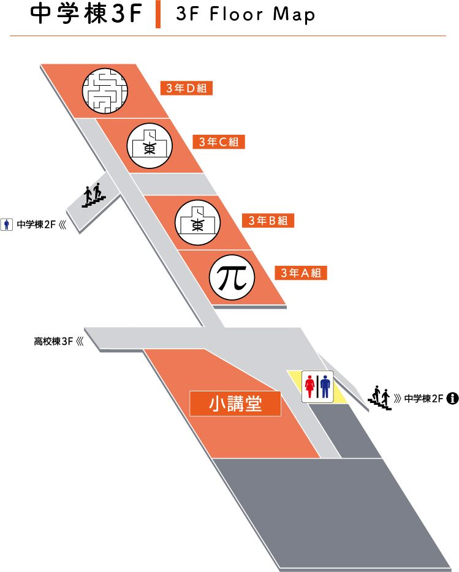
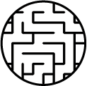
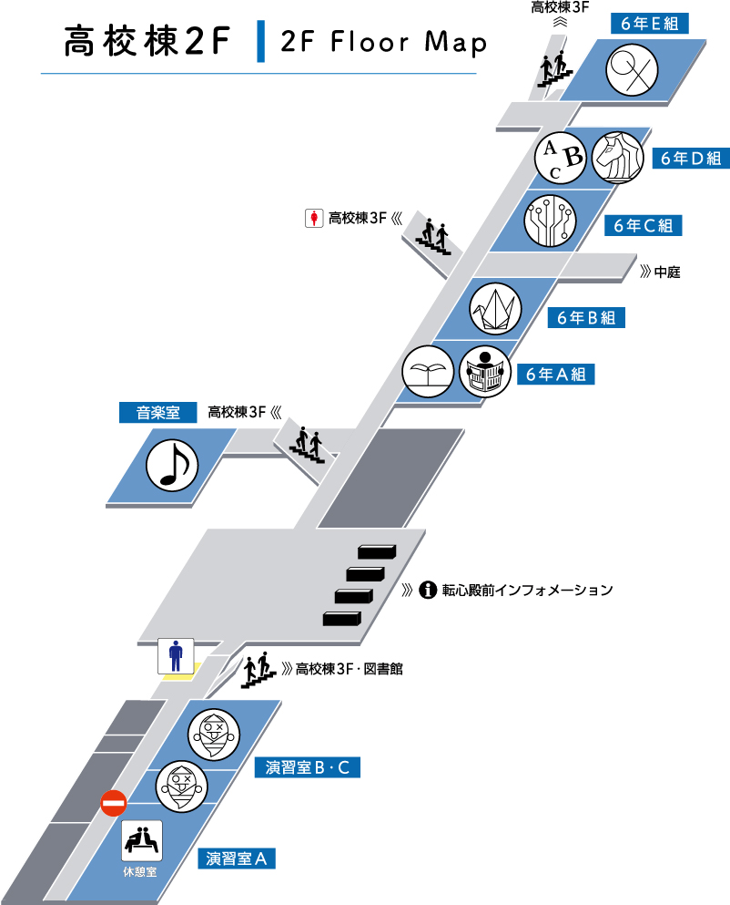
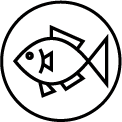
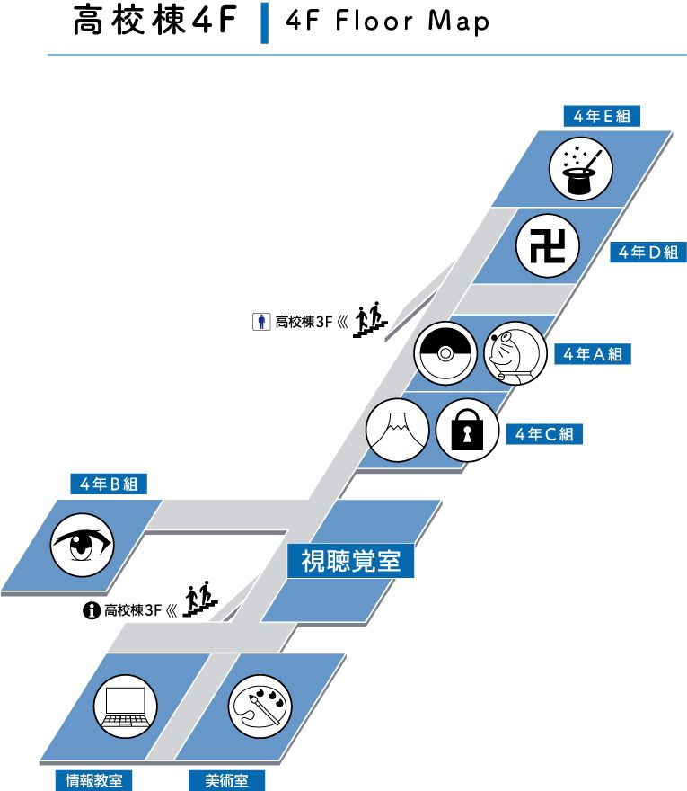

校内案内

校内図

展示紹介
 


1年D組 1年学年展示
1年B・C組 1年学年展示
1年A組 書道部
大航海時代、アポロ計画、豪華客船、バイオミメティクス、海洋生物など……。空に海に宇宙にと、“Sailing”にまつわる多種多様なテーマでグループ研究した成果を、プレゼンテーションします。
菁々祭テーマであるSailingにちなみ航海史、船舶、海洋生物などのグループ研究を行い、研究成果の展示をします。美術や書写の作品もあわせて展示しています。ぜひご覧ください。
日常の部活動を反映した部員たちの書作展を開催します。古典作品に込められた先人の情熱に想いを馳せながら、取り組みました。お香を焚いて心安らぐ空間づくりにも努めました。香りを聞きながらのご鑑賞をお楽しみください。

▲フロア一覧へ戻る


2年D組 東菁会
2年B・C組 2年学年展示
2年A組 囲碁将棋部
和室・会議室 お茶会
東菁会は卒業生の保護者の会で、趣味の会としては７団体が日頃学校や東大寺の施設を利用して活動しています。菁々祭では、水墨画・陶芸・書道・川柳・俳句の会が日頃の練習の成果を発表しています。ぜひご覧下さい。
生徒が制作した作品などを展示しています。
将棋は知のスポーツです。受験生のそこの貴方！ここで貴方の「知」を高めて成績アップしませんか？今年は中学、高校共に近畿大会に駒を進めました。奈良県最強の棋士達に貴方は勝てるのか？挑戦者求む！勿論初心者歓迎です。
今年も、菁々会茶道同好会により、菁々祭お茶席を開催させていただきます。
ゆったりと優雅なひとときをお過ごし下さいませ。
★お茶券 一 般５００円
在校生４５０円
ゆったりと優雅なひとときをお過ごし下さいませ。
★お茶券 一 般５００円
在校生４５０円
▲フロア一覧へ戻る


3年D組 迷路
3年B・C組 3年学年展示
3年A組 数学研究部
あなたはこの迷路から抜け出せますか?昨年よりもさらにレベルアップしています。整理券なしでいつでも入れます。
3年B組では、1学期に制作した美術の作品や、夏休みの研究レポートを展示しています。また、3年C組では、各班に分かれてそれぞれ制作した作品や装飾を展示しています。
解いたらノートなどの景品がもらえる懸賞問題や、計算力を競う計算大会、部員の記事をまとめた部誌を用意しています！数学力自慢や計算力を試したい方など、こぞってどうぞ！
▲フロア一覧へ戻る


6年E組 クイズ研究部
6年D組 チェス研究同好会
6年D組 英語部
6年C組 電子工作部
6年B組 折り紙研究部
6年A組 新聞部
6年A組 園芸部
音楽室 音楽部
演習室B・C お化け屋敷
TDJクイ研では、ペーパークイズの配布・採点や、早押しクイズの体験会を実施。成績優秀者には、ささやかな景品を授与。テレビで見たことのある人にも出会えるかも？憧れのクイズ王目指しての挑戦、お待ちしています！
ふえぇ❣️😳💦今日は菁々祭🎋🌠らしい⁉️なのに彼女💏💑💕がいないってマジ⁉️⁉️💦💦😢⤵️これじゃ令和初🆕の菁々祭🎋🌠でも😦ひとりぼっちっち😢💔😖⤵️うぇ〜〜ん😭💔💦実は🙊💭来場者に🌝✨好きな人😘👱♂️💕いるんだけどチェス研♞♔に来てくれたら一発OK👌💕✨するのになぁ😳🙌💓
景品付きの塗り絵からディベートや模擬国連に関する展示まで、どなたでも楽しめる幅広い内容でお待ちしています
部員たちが制作したロボットや電子工作作品を展示しています。自立制御で動くロボットや、もぐら叩きゲームができちゃう作品も…！？実際に見て、触って、楽しんでください。
これが紙1枚から！？と驚くあなたの知らない折り紙の世界がそこに。折り紙オンリーの海のジオラマや、精巧緻密な部員による作品など。折り紙体験スペースもあります。ご休憩がてら是非。
新聞部では、今年度発行してきた新聞の展示と文化祭における各部活の評価アンケートを実施しています。アンケートに際し、できるだけ多くの方の意見を反映していきたいと考えておりますので、投票お願いします。
園芸部は、植物の販売と写真などの展示を行っております。チューリップの球根や植物の苗などを販売しています。展示場所ではブシモ配布します。なお、展示場所と販売場所が異なりますので、ご注意ください。
今年も盛り上がること間違いなし！毎年大盛況の音楽部ライブ！多彩な選曲と確かな演奏力で観客の皆さんを魅了します！是非是非お越しください！(両日共、午前、午後の部に分かれて行われますが、特に午後の部は満員になると予想されますので、出来るだけお早めにお越しください。)
ある共同墓地に迷い込んだあなたたちは、あるものを目にしてしまう。迫り来る恐怖！あなたはこの現実に耐えられることができるのか？
去年のお化け屋敷と負けず劣らず、過去にはない斬新で自由が束縛されたお化け屋敷を体験しにいきませんか？
去年のお化け屋敷と負けず劣らず、過去にはない斬新で自由が束縛されたお化け屋敷を体験しにいきませんか？
▲フロア一覧へ戻る


5年E組 鉄道研究部
5年D組 MGA同好会
5年D組 ラーメン研究会
5年C組 写真部
5年B組 文藝同好会
5年B組 紅茶同好会
5年A組 ロケット同好会
5年A組 観賞魚同好会
生物室 科学部
図書館 菁々会書画展
当部では部屋の大半を使った大規模なジオラマを作成・開放し、壁新聞や部員所有のグッズを展示しています。今年もお客様主体で大人から子供まで楽しめるようなジオラマ開放・接客を心がけるので是非お越しください。
MGAはテーブルゲームに関する同好会で、会員が作ったボードゲームやカードゲームの展示、会誌の配布などを行っております。展示されているゲームは、会場で実際に遊んでみる事ができます。
ラーメンに関する情報交換の場を設けることで、ラーメンに関する情報が蓄積する。来場者が新規のジャンルを開拓する手助け、ラーメンに興味のなかった人がラーメンに興味を持つ動機付けの場所とすることが展示のねらい。
今では珍しい暗室で作品を作っており、約2mx1mの大型のモノクロフィルム写真を二作品展示しています。また、部員個人の展示に加えテーマを統一した展示を行っています。記念写真を撮影できるコーナーがあります。(枚数に限りあり)
「本を読んで、海へと漕ぎ出そう。」海や舟をテーマにした小説を置いています。立ち読み自由。会員の書いた渾身の作品を纏めた今年のテーマにぴったりの会誌。「漣」もお楽しみに。
本年度の紅茶同好会では、展示、講演会共通のテーマとして「アフタヌーンティー」を掲げております。また、去年度要望が多かった紅茶の提供もバザーの方で行っておりますので要チェックです！！
ここでは、大型発射台、ロケットからの空撮写真、発射実験の映像、過去に飛ばしたロケット等々を展示しています。会誌の配布も行なっております。公開ロケット発射実験の方もよろしくお願いします。
主に休日の採集活動で出会った日本淡水魚や、クマノミなどの海水魚を飼育しています。熱く盛り上がる菁々祭でちょっと疲れたという方、魚達に囲まれた癒しのひと時はいかがですか？
高校棟２階生物室では植物の未分化細胞、透明骨格標本、剥製、標本、物理化学実験など精鋭部員による日頃の研究、実験の成果を展示し、担当部員による詳し〜い解説や雑学クイズを行っています。大好評演示実験も是非！
東大寺塔頭の貴重な書画作品などを展示、販売（一部購入規制や抽選の場合あり）しております。また、菁々会会員の皆様が日頃の成果を発揮した作品も展示しております。ぜひご覧下さい。
▲フロア一覧へ戻る


4年E組 マジック同好会
4年D組 歴史部菁史会
4年A組 ドラえもん同好会
4年A組 ポケモン同好会
4年C組 暗号同好会
4年C組 登山同好会
4年B組 アニメ研究会
美術室 美術部
情報教室 情報同好会
マジック同好会は、至近距離でお客様に見てもらえる、主にトランプを使ったマジックと、決まった時間帯で開催する、主に小道具を使ったショーとを、どちらも日々練習しており、お客様にその成果を披露出来ればと。
今年の展示は元号についてです！今年元号の話題は聞き飽きたというあなた、本当に元号のこと知ってますか？身近で実はよく知らない元号の歴史を徹底解剖！改元を体験できる撮影コーナーも⁉︎
ドラえもんに関する展示や、ドラえもんの知識を試す検定を行っています。ドラえもんが好きな人、ドラえもんの知識に自信がある人は来てください。
今年も活動します！ポケモン好き集まれ！
100字で伝えられることなんてそうそう無いですが、これだけは言わせてください。「暗号は、難しいけど、面白い！」 嘘だと思ったら、僕たちの展示を見に来て下さい！Uc ugjj qyrgqdw wms.
当同好会は、約2か月に1回の定例登山に加えて年1回の日本アルプスへの夏山合宿など、様々な山を訪れてきました。その紹介と山行をまとめた紀行文集の配布を行います。
アニメ研究会はアニメがだいすきなたのしいみんなのおともだち！みんなでアニメを見たり、ひとりぼっちでDアニメストアやAmazonプライムビデオでアニメを見たりしています！たのしいよ！ぜひみんな来てね！
美術部では水彩画や油絵、切り絵などの作品を展示しており、美術の様々な体験もできます。ぜひお越しください!
会員の製作したゲームの展示と配布を行っています。今年は教室イベントも開催します!
▲フロア一覧へ戻る